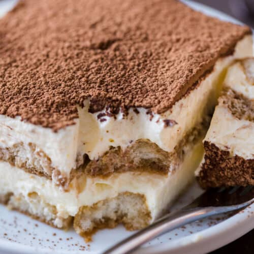

Tiramisu

Description
Here is an Italian dessert made of savoiardi ladyfingers soaked in coffee,
arranged in layers and filled with a cream made with mascarpone and eggs.
Tiramisu is one of the most famous Italian dessert in the world,
born in Treviso (a lovely town near Venice), delicious and easy to make.
Ingredients
- savoiardi ladyfingers
- mascarpone cheese
- eggs
- granulated sugar
- coffee (better if espresso)
- Rum or Marsala wine
- unsweetened cocoa powder
Steps
- Make the coffee. Then add 2 tablespoons of Rum or Marsala wine. Set aside and let cool.
- Separate the egg whites from the yolks. Set aside the yolks and whip the egg whites until stiff.
- In a bowl, beat the egg yolks with sugar until light and smooth, 3 to 5 minutes.
- In the meantime, pour the mascarpone cheese into a bowl and work it with a spoon to make it softer.
When the yolks are ready add the mascarpone cheese.
- Slowly whip the mascarpone cream for 2 to 3 minutes. Now add the stiffly beaten egg whites.
- Mix with a wooden spoon, from bottom up. Mix slowly until smooth and creamy.
- Dip the ladyfingers quickly (1 or 2 seconds) into the coffee.
Then arrange the ladyfingers in the casserole of your liking.
- Arrange them so that they cover the bottom of the casserole.
Then spread the mascarpone cream over the ladyfingers.
- Add another layer of ladyfingers and then top with more mascarpone cream.
If you are making the last layer, spread the mascarpone cream generously.
- Sprinkle with cocoa powder. You can even add dark chocolate chips, if you like.
- Allow to rest 3 hours in the refrigerator before serving.
Even better if you prepare the tiramisu the day before, letting it rest overnight.